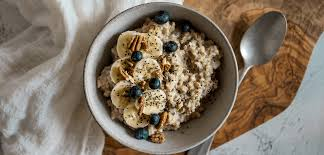

power bowl proteico
un bowl completo con proteínas, carbohidratos y grasas saludables. perfecto después de entrenar o para un almuerzo consistente.
25 minutos
2 porciones
proteico

ingredientes
- 1 pechuga de pollo grillada en tiras
- 1 taza de quinoa cocida
- 1 taza de vegetales asados (zapallo, zanahoria, brócoli)
- 1/2 palta en láminas
- 2 cucharadas de hummus o yogur natural
- semillas a gusto
- sal, pimienta y aceite de oliva
paso a paso
- 1. cociná la quinoa según el paquete y dejala entibiar.
- 2. grillá la pechuga condimentada con sal, pimienta y aceite de oliva.
- 3. colocá la quinoa como base del bowl, sumá los vegetales asados y la palta.
- 4. incorporá el pollo en tiras, coroná con hummus o yogur y espolvoreá semillas.